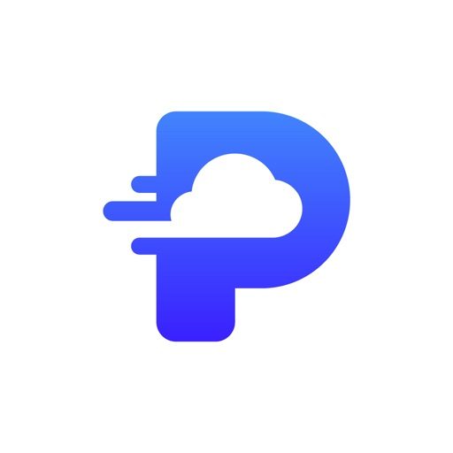
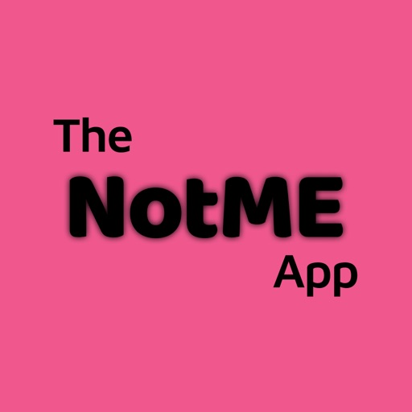

Ships iOS & Flutter apps.
Now wiring AI into the workflow.
I'm a Senior Mobile Engineer based in Ahmedabad, India — 9+ years taking apps from spec to the App Store, most recently at Wve Labs, where I've shipped a spirits-scanning app for Dan Abrams' Mediaite and a 2,500+ review vaping-cessation app. Lately I've been folding agentic AI tooling (Claude Code, MCP, automated CI review) into how I actually build mobile software, not just what it ships.
Experience — read as a changelog
-
v5Senior Mobile Developer — Wve Labs current
Full-time iOS & Flutter development for external clients, spanning consumer and enterprise apps. In the past year, added AI-assisted engineering practice to the role — automated PR review, custom hooks, and MCP-based tooling — earning an Anthropic Claude Code certification in Mar 2026.
- Shipped The Daily Pour (formerly Bottle Raiders) — AI label/barcode-scanning spirits review app for Dan Abrams' Mediaite, covered by Forbes and Brewbound.
- Shipped Puff Count: Quit Vaping Now — 4.3★ across 2,500+ App Store ratings.
- Shipped The NotME App — identity-verified consent logging for dating safety.
-
v4iOS & Flutter Developer — Ciright, Inc.
Enterprise productivity suite: prototyping through App Store release, on Firebase/Firestore/Crashlytics.
- Built Enterprise Note — cross-device note sync with sharing and personal-knowledge features.
- Built Ciright Works — task/project tracking with document, audio, and media storage for teams.
- Built Line Items — sales/bidding equipment and project record-keeping tool.
-
v3iOS & Flutter Developer — WeblineIndia
Client apps across health, travel, and lifestyle categories.
- Built Patient-Tracker Plus — iPad app for clinicians logging patient vitals and medication history.
- Built Fast Tract Diet — gut-health food tracker with symptom and meal logging.
- Built Quotes Corner — categorized quote-sharing app.
-
v2Jr. iOS Developer — Discus Business Solutions
First professional role — sales & document-management tooling for enterprise clients.
- Built Odin Live Plus — downstream supply-chain app with CRM, sales-force automation, and inventory tracking.
- Built Greenbox DMS — secure document collaboration and management platform.
-
v1iOS Developer — Training — AGILE Infoways Pvt. Ltd
Entry into professional iOS development.
Shipped, live, verifiable
Three apps currently live on the App Store from the Wve Labs era — ratings pulled directly from Apple, not self-reported.
Formerly Bottle Raiders — AI-powered label and barcode scanning to surface aggregated spirits reviews. Founded by Dan Abrams; covered by Forbes, Brewbound, and Mediaite.

Puff-tracking and custom quit-plan app; the App Store listing claims 800K+ users. Handles daily/weekly/monthly progress visualization and shared quit goals.

Enthusiastic-consent verification app: ID-verified profiles, per-meeting QR pairing, and securely stored consent records.
What I can take on
Native iOS apps from architecture through App Store release — UIKit and SwiftUI, offline storage, and performance tuning.
One codebase, native feel on iOS and Android — used across enterprise and consumer apps at three companies.
Wiring AI assistants into the actual build pipeline: automated PR review, custom hooks, MCP server integrations, and slash-command workflows — not just AI features inside an app.
Build and release automation, crash reporting, analytics, and cloud backends so releases stop being manual.
Background
Education
- MCA, Computer Software EngineeringSuresh Gyan Vihar University · 2020–2022
- Master of Mobile Application DevelopmentGanpat University · 2016–2018 · Grade A
- Bachelor of Computer ApplicationsGrow More Group of Institutions · 2013–2016
- Higher Secondary EducationAdarsh Higher & Secondary School · 2001–2012
Certifications
- Claude Code in ActionAnthropic · Mar 2026
- SwiftUIUdemy · Jan 2025
- iOS App Store & In-App PurchasesCoursera · Jun 2021
- Programming in Swift 5Coursera · Jun 2021
- Flutter & DartUdemy · Nov 2020
- Swift and Xcode DevelopmentUdemy · Jan 2020
- Google Digital UnlockedGoogle
- IICT CertificationInternational Institute for Consulting and Training
Core skills
Frequently asked
Native iOS (Swift, SwiftUI) and cross-platform Flutter development, with a recent focus on bringing AI/agentic tooling — Claude Code, MCP, automated CI review — into the mobile engineering workflow itself.
9+ years of professional mobile development since January 2017, across five companies in Ahmedabad, India — currently Senior Mobile Developer at Wve Labs since July 2021.
He's full-time at Wve Labs and open to select remote consulting engagements and architecture/code reviews — reach out via email or LinkedIn.
Get in touch
Based in Ahmedabad, India (GMT+5:30) — open to remote work globally.